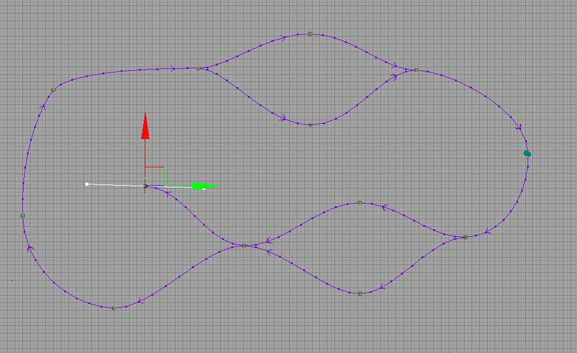
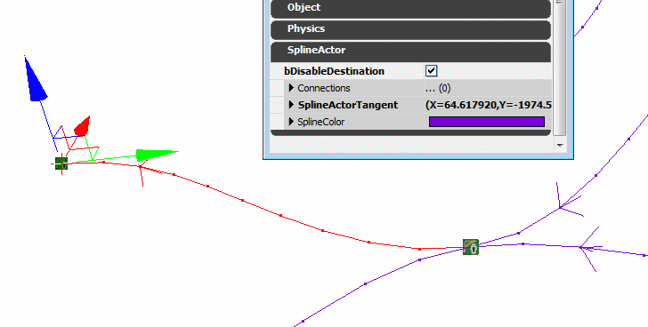

Using Spline Actors
Overview
Sometimes a game system requires a complex path through a level, but is not appropriate for the Matinee tool. An example of this may be a traffic system, where vehicle routes need to branch and merge. There is an Actor class called SplineActor which can be used for this. Each SplineActor can be connected a number of other SplineActors, and each has a tangent vector (or 'handle') used to shape the spline.

The SplineActor system differs from the AI path system because connections are never automatically made or adjusted, and it does not perform any checks to ensure entities can pass unobstructed between nodes. You do, however, get a lot of control over the shape of the paths.
Editing
There are a number of editor shortcuts for editing a path made using SplineActors.
Connecting
The easiest way to create a connection is to ALT-drag an existing SplineActor. This is the usual editor shortcut for duplication, but with SplineActors, will insert the new one into the existing spline. In this way you can easily extend a spline by repeatedly ALT-dragging the point at the end to the new location.
Another way to create a connection is to select two SplineActors and then pressing the period (.) key. This will connect the first selected to the second. If the two points are already connected by a spline, pressing the period key will reverse the direction of the spline, which makes it easy to fix.
You can also select two points, right-click on one and choose Spline Options->Connect/Flip.
Breaking
The easiest way to break a connection is to hold the ALT key and click at any point on the spline itself. This is the same shortcut as breaking a connection in Kismetc etc.
You can also select two points, right click on one of them and choose Spline Options->Break.
In addition, you can break all connections to a set of SplineActors by selecting them all, right-clicking on one of them, and choosing Spline Options->Break All Links.
Adjusting Shape
When you select a SplineActor, you will see a white handle which controls the curvature at that point. The small squares on each end of the handle can be clicked and dragged with the mouse to modify the shape. You can also enter the desired tangent directly in the property window of the SplineActor. Note that SplineActor tangents are stored relative to the actor. This means that if you rotate the actor, the tangent will also be rotated. This allows to select a number of SplineActors and translate/rotate them to a different part of the map, and maintain the shape of the curve.
Changing Direction
The spline has a specific direction, indicated by the arrow on the curve. If you wish the change the direction of the curve, you can select two connected points and press the period (.) key, as mentioned above. Note that the direction of the tangents at each end is still followed, so the shape of the spline will change.
If you wish to change the direction of an entire spline containing many SplineActors, you can select them all, right click on one and choose Spline Options->Reverse All Directions. Note that this options tries to maintain the shape of the overall spline, and will flip the direction of the tangent of each selected SplineActor.
Disabling Branches
Your application may wish to specify some branches of the spline network to be 'disabled'. There is an option in the SplineActor called bDisableDestination which can be used for this purpose. All spline branches connecting to that SplineActor will then be considered 'disabled', and will be drawn as red in the editor.

You can enable and disable destination SplineActors in-game by simply using the Toggle Kismet action on one.
For Programmers
There are a few useful features of SplineActors in code as well.
SplineComponent
Each SplineActor owns a number of SplineComponents, one for each actor that it is connected to. SplineComponents can be used on their own if you wish, and contain all the code for drawing the spline in 3D space.
Constant Velocity
Each SplineComponent automatically builds a lookup table that allows you to evaluate a position along a spline both as a function of the spline paramter, and as a function of the distance along the spline. Using this, it is possible to easily interpolate along a spline shape at a constant linear velocity. This is different from, say, Matinee, where the velocity at each keypoint is dictated by the spline tangent. To do this, simply use the GetLocationAtDistanceAlongSpline function of SplineComponent, passing in the distance along the spline.
This table also allows you to call GetSplineLength, to return the total length along the spline path.
Important!
You are viewing documentation for the Unreal Development Kit (UDK).
If you are looking for the Unreal Engine 4 documentation, please visit the Unreal Engine 4 Documentation site.